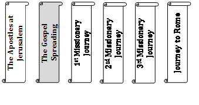
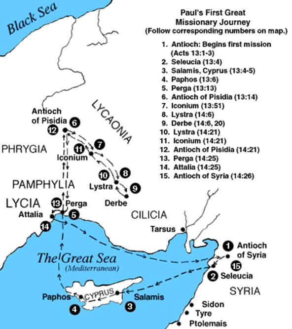
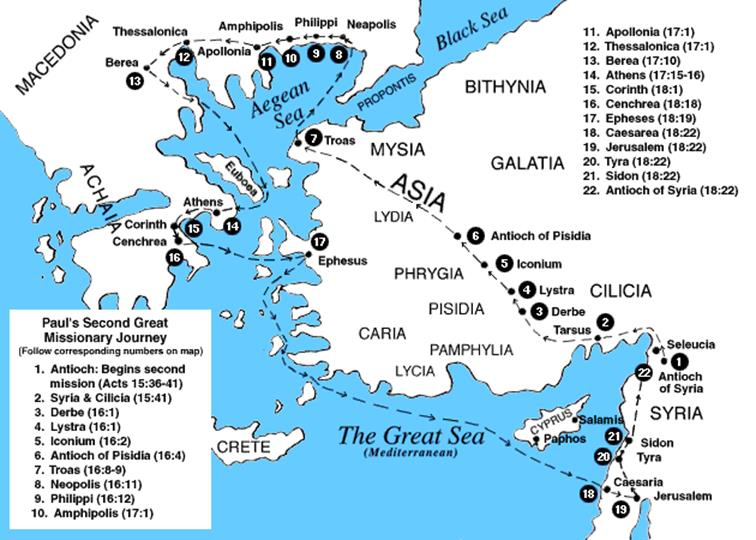
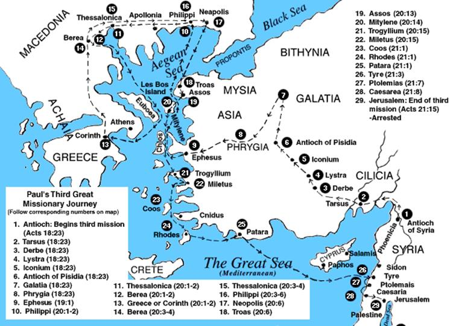
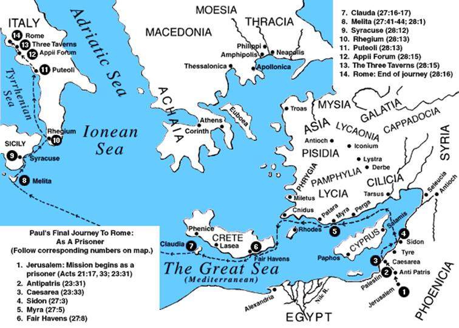

Second Year Mwaka wa Pili
Textbook Vitabu vya Kiada
Acts
The Acts of the Holy Ghost
DELIVERANCE BIBLE INSTITUTE of MOSHI
Moshi, Kilimanjaro, Tanzania
DELIVERANCE BIBLE INSTITUTE
Portland, Maine, USA
Introduction

General Details
Writer
Luke is considered to be the writer of the book of Acts. Luke probably wrote Acts while he was at Rome or Caesarea. Acts 1:1-3; Lk.1:1-4; Acts 16:8-10; 20:6; Col. 4:14; II Tim. 4:11
Date
The book of Acts was written between A.D 61-64. Covers 3% of the Bible from the ascension of Christ, about A.D. 33, through the imprisonment of Paul in Rome, about A.D. 62.
Theme
The Acts of the Holy Ghost in the lives of the Apostles. (Acts 1:4-5)
Acts was written to provide history of the growth of the early church. Special emphasis is given on the importance of the day of Pentecost and on Believers being empowered to be effective witnesses for Jesus Christ. Acts 1:4-5; 2:1; 20:16; I Cor. 16:8
Luke was determined to remind his readers of what took place on the day of Pentecost and that they should be moving on in the Holy Ghost not away from Him.
Acts sheds much light on truths concerning the indwelling of the Holy Ghost, who empowers, guides, teaches, and serves as our Counselor and Comforter. We are enlightened and encouraged by the many miracles that were performed during this time by the disciples—namely Peter, John, Stephen, Philip and Paul.
Key Verse & Other Important Passages
Acts 1:8—But ye shall receive power, after that the Holy Ghost is come upon you: and ye shall be witnesses unto me both in Jerusalem, and in all Judaea, and in Samaria, and unto the uttermost part of the earth.
Other Important Passages: 2:4, 38; 4:12-31; 5:32;6:3,5;7:51,55; 9:3-6,15,16;10:38; 44;11:15,16,24; 13:2,4,52; 15:8; 16:6,7,31; 19:2,6; 20:28.
Synopsis
Acts gives the history of the Christian church and the spread of the gospel of Jesus Christ, as well as the opposition to it. Although many faithful servants were used to preach and teach the gospel of Jesus Christ, Saul, whose name was changed to Paul, was the most influential. Before he was converted, Saul took great pleasure in persecuting and killing Christians. Saul's dramatic conversion on the road to Damascus (Acts 9:1-31) is a highlight of the book of Acts. After his conversion he went to the extreme opposite of loving God and preaching His Word with power, through the Holy Ghost.
The disciples were empowered by the Holy Ghost to be His witnesses in Jerusalem (chapters 1-8:3), Judea and Samaria (chapters 8:4-11:18), Antioch (11:19-13:3) and to the ends of the earth (chapters 13:4-28). (21:17-26:32)
Understanding the Book of Acts
The transition from the Old Covenant to the New Covenant of grace and faith is seen in several key events in Acts. 3:25; 7:8
a. The change in the ministry of the Holy Ghost, whose primary function in the Old Testament was the external "anointing" but now to be within them.
Moses - Numbers 11:17 And I will come down and talk with thee there: and I will take of the spirit which is upon thee, and will put it upon them; and they shall bear the burden of the people with thee, that thou bear it not thyself alone.
Othniel Jud. 3:8-10, Gideon 6:34; 11:29; 13:25; 14:6,19; Saul 1 Sam 10:6-10 2Ch 15:1
On the Day of Pentecost the Holy Ghost came to dwell in the hearts of the disciples that were assembled together fulfilling the promise Jesus gave to them.
Luke 24:49—And, behold, I send the promise of my Father upon you: but tarry ye in the city of Jerusalem, until ye be endued with power from on high.
John 14:16-And I will pray the Father, and he shall give you another Comforter, that he may abide with you for ever;
17-Even the Spirit of truth; whom the world cannot receive, because it seeth him not, neither knoweth him: but ye know him; for he dwelleth with you, and shall be in you.
b. The indwelling Spirit is the gift of God to those who have come to know Jesus Christ as their Savior. You are not Baptized or indwelled with the Holy Ghost at new birth.
The infilling comes after you have received the gift of Eternal Life through Jesus Christ our Lord, and then receive the gift of the Holy Ghost.
John 14:17; Eph 1:13,14; Romans 8:9-11; I Cor. 3:16; 6:19; 2Co 6:16
2. Paul had a dramatic transition from the Old Covenant to the New Covenant. Phil. 3:6,8,9; Acts 8:3; 9:17
3. Peter's vision of the sheet in Acts 10:9-15 is another sign of the transition from the Old to the New Covenant. The Unity of Jew and Gentile in one faith is provided. The "clean" animals symbolizing the Jews and the "unclean" animals symbolizing the Gentiles were both declared "cleansed" by God through the sacrificial death of Christ. No longer under the Old Covenant without the power to keep God's Laws, both are now united in the New Covenant of grace through faith in the shed blood of Christ on the cross.
B. God can take ordinary men and endue them with power through His Spirit.
1. God took a group of fisherman and used them to turn the world right side up. Acts 17:6
God took Saul of Tarsus a Christ-hating murderer and changed him into the greatest Christian evangelist the world has ever known, the author of fourteen books of the New Testament. God used persecution (Acts 8:1-9:4) to cause the quickest expansion of a "new faith" in the history of the world.
God will do the same through us-changing our hearts, empowering us by the Holy Ghost, and giving us a passion to spread the good news of salvation through Christ. If we try to accomplish these things in our own power, we will fail. Like the disciples in Acts 1:4,8, we are to wait for the empowering of the Spirit, then go in His power to fulfill the Great Commission (Mat.28:19-20; Mk.16:15-20).
3. Christ worked and taught "through the Holy Ghost." While He was on earth in the flesh. Christ was totally dependent upon the Holy Ghost. He had to surrender Himself and make Himself available to the Spirit.
4. The Holy Ghost gives to the disciples the power to witness the Word of God that Jesus Christ is the Son of the living God. Acts 1:1,2; Luke 3:16-17; Luke 4:14
Through the power of the Holy Ghost Jesus taught fishermen that He could fill ships with fish to the sinking point with broken nets (Luke 5:1-11)
Luke 5:10 And so was also James, and John, the sons of Zebedee, which were partners with Simon. And Jesus said unto Simon, Fear not; from henceforth thou shalt catch men.
Here are a few scriptures showing the words revealed to the disciples, Lk.6:20-49; 8:4-17;9:22-23;12:22-50;14:27;18:31; 19:10; 21:28,36; 22:19-20;31-32,40,46,69; 24:6-7,32
Luke 24:49 And, behold, I send the promise of my Father upon you: but tarry ye in the city of Jerusalem, until ye be endued with power from on high.
Luke 8:18—Take heed therefore how ye hear: for whosoever hath, to him shall be given; and whosoever hath not, from him shall be taken even that which he seemeth to have.
Matt. 16:18
The four gospels showed us how the foundation of that house was laid;
The book of Acts shows us how the superstructure began to be raised,
1. All the promises of God are made good,
a. The great promises of the descent of the Holy Ghost, and his wonderful operations, in the apostles no longer weak-headed and weak-hearted, able now to bear (John 16:12-15) as bold as lions and face those hardships of which they once trembled as lambs.
The Holy Ghost makes the preaching of the Word mighty to the pulling down of Satan's strong holds,
2Cor. 10:4—(For the weapons of our warfare are not carnal, but mighty through God to the pulling down of strong holds;)
The word preached without the power of the Holy Ghost can be preached in vain. The commission granted to the apostles was executed, and power to witness was exerted and souls were saved and miracles happened, restoring sick bodies to health and dead bodies to life, miracles of judgment, striking rebels blind or dead; and much special miracles in imparting spiritual gifts to them.
Acts 19:11—And God wrought special miracles by the hands of Paul:
Romans 1:11—For I long to see you, that I may impart unto you some spiritual gift, to the end ye may be established;
Acts 13:11—And now, behold, the hand of the Lord is upon thee, and thou shalt be blind, not seeing the sun for a season. And immediately there fell on him a mist and a darkness; and he went about seeking some to lead him by the hand.
1Tim. 1:20—Of whom is Hymenaeus and Alexander; whom I have delivered unto Satan, that they may learn not to blaspheme.
b. The proofs of Christ's resurrection in the gospels are abundantly confirmed in Acts,
Acts 1:3 To whom also he shewed himself alive after his passion by many infallible proofs, being seen of them forty days, and speaking of the things pertaining to the kingdom of God:
Christ called His disciples to be His witnesses through the power of the Holy Ghost, as fishers of men, and enclosing multitudes in the gospel net, as lights of the world, and salt of the earth, so here we have the world enlightened by them; the day-spring from on high we find shining more and more. The corn of wheat, which fell to the ground, springs up and bears much fruit; the grain of mustard-seed there is here a great tree; and the kingdom of heaven, which was then at hand, is here set up. Christ's prediction of the persecution which preachers of the gospel should be afflicted was abundantly fulfilled, with extraordinary supports and comforts in their afflictions.
1Kings 8:56—Blessed be the LORD, that hath given rest unto his people Israel, according to all that he promised: there hath not failed one word of all his good promise, which he promised by the hand of Moses his servant.
2. Every Holy Ghost filled believer is a member of the Christian church which is the tabernacle of God among men,
Acts gives us an account of the framing and rearing of the tabernacle of God among men.
3. The book of Acts reveals the continuing ministry of Jesus Christ 1:2-9
Acts 1:2 Until the day in which he was taken up, after that he through the Holy Ghost had given commandments unto the apostles whom he had chosen:
The Command & Promise of Power to Witness
Christ gave and taught His commandments to those whom He had chosen, so that they in turn could teach other's His commandments. Acts 1:1-8; 2:39 All chosen believers are commanded to receive the baptism of the Holy Ghost to be witnesses.
A. "Ye shall Receive Power after that the Holy Ghost has come upon you"
1. The Apostles with Power 2:43; 4:33; 5:12;
2. Peter and John with Power 2:14-41; 3:1-4:20; 5:15-16; 8:14, 17; 10:44
3. Stephen with Power 6:8
4. Philip with Power 8:5-13; 39-40
5. Paul with Power 13:9-11, 47; 14:10,20; 16:18,26; 19:6,11-12; 20:9-12; 26:18; 28:5-9
B. "Ye shall be Witnesses unto Me"
1. Jerusalem 1:1-8:3
2. Judea and Samaria 8:4-11:18
3. Antioch 11:19-13:3
4. Paul's three missionary journeys 13:4-21:16
5. Paul in Jerusalem 21:17-26:32
6. Paul on his way to Rome 27:1-28:31
God's Pattern for Soul Winning
Acts 14:22—Confirming the souls of the disciples, and exhorting them to continue in the faith, and that we must through much tribulation enter into the kingdom of God.
Four essentials to success in soul winning:
UNITY IN THE BODY OF CHRIST.
Acts 14:1 And it came to pass in Iconium, that they went both together into the synagogue of the Jews, and so spake, that a great multitude both of the Jews and also of the Greeks believed.
SUCCESSFUL SOUL WINNERS WORK TOGETHER.
� Unified spirits working together for the salvation of souls.
"They both went together"
"So spake, that a great multitude both of the Jews and the Greeks believed"
A unity of sincere love for all ministers of the Lord;
UNIFIED IN SPIRIT AND IN FAITH!
All God's servants should be: serving together & working together.
Eph 4:1-6- v.3 Endeavouring to keep the unity of the Spirit in the bond of peace…
THE DESIRE OF OUR LORD HAS BEEN, AND STILL REMAINS, THAT WE BE ONE WITH ANOTHER AS HE IS WITH THE FATHER.
John 17:21 That they all may be one; as thou, Father, art in me, and I in thee, that they also may be one in us: that the world may believe that thou hast sent me. (17:11; 17:22,23)
FAITHFULNESS IN THE BODY
1. We must speak the Word that men might believe.
Ro 10:17 So then faith cometh by hearing, and hearing by the word of God.
2Co 2:17 For we are not as many, which corrupt the word of God: but as of sincerity, but as of God, in the sight of God speak we in Christ.
2. We must go to where the multitudes are.
The servant of God is to speak the truth in love.
The servant of God has to both contain the witness of His Spirit, and to speak the witness of His Word.
3. Let the Word exhort us:
1Co 4:2 Moreover it is required in stewards, that a man be found faithful.
1Co 4:17 For this cause have I sent unto you Timotheus, who is my beloved son, and faithful in the Lord, who shall bring you into remembrance of my ways which be in Christ, as I teach every where in every church.
Col 1:7 As ye also learned of Epaphras our dear fellow servant, who is for you a faithful minister of Christ;
1Th 5:24 Faithful is he that calleth you, who also will do it.
2Ti 2:2 And the things that thou hast heard of me among many witnesses, the same commit thou to faithful men, who shall be able to teach others also.
FULLNESS IN THE BODY
"Filled with joy" & "Filled with the Holy Ghost. Acts 13:52; Col. 2:9
Eph 1:23 Which is his body, the fulness of him that filleth all in all.
Eph 4:13 Till we all come in the unity of the faith, and of the knowledge of the Son of God, unto a perfect man, unto the measure of the stature of the fulness of Christ:
FOLLOWING THE VOICE OF THE LORD
When facing opposition, a servant must carefully discern what is best for the furtherance of the Gospel, and the glory of God.
The time(s) to stand firm against opposition will reap greater results.
Other time(s), leaving an area will bring in greater harvest.
It is vital to be Holy Ghost filled to hear what the Spirit is directing you to do.
Ac 16:6 Now when they had gone throughout Phrygia and the region of Galatia, and were forbidden of the Holy Ghost to preach the word in Asia,
Mt 10:23,24—But when they persecute you in this city, flee ye into another: for verily I say unto you, Ye shall not have gone over the cities of Israel, till the Son of man be come 24 The disciple is not above his master, nor the servant above his lord. Letting the Lord instill that truth to you, will greatly empower your place in the ministry
- Shall we fear suffering?
IV. A Fact Every Servant of the Lord must Never Forget :
The Servant of the Lord will Suffer Persecution
Acts 14:22—Confirming the souls of the disciples, and exhorting them to continue in the faith, and that we must through much tribulation enter into the kingdom of God.
Acts 20:23,24; 21:13
1Thes. 3:3—That no man should be moved by these afflictions: for yourselves know that we are appointed thereunto.
2Tim. 3:12—Yea, and all that will live godly in Christ Jesus shall suffer persecution.
V. Outline of Acts
The key verse of Acts is 1:8 and the key word is "witness." Acts consists of the details of two main MISSIONS or crusades of the early Christian Church.
1. Home Missions (featuring Peter) Ch. 1-12
2. Foreign Missions (featuring Paul) Ch. 13-28
1. Home Missions - Peter is the focal apostle throughout Chapters 1-12. Peter is also joined by the "other apostles" (Christ's original twelve disciples minus Judas Iscariot and with the addition of Matthias). Apostle John and Deacons Stephen and Philip are particularly prominent in these chapters. (Covered in Sections 1 & 2 of our study of Acts.)
2. Foreign Missions - Paul is the focal apostle throughout Chapters 13-28. Barnabas and his nephew John Mark accompanied Paul on the First Missionary Journey (12:25). Because of a disagreement between Paul and Barnabas, Paul is accompanied by Silas instead of Barnabas during the Second Missionary Journey. Paul's companions during his Third Missionary Journey included Timothy and Titus. These two men are mentioned in the epistles Paul wrote during this time. Luke also accompanied Paul on the return trip to Jerusalem, as indicated by the "we-section" of Acts. As the writer of Acts, Luke identifies the times in his writing when he was a first-hand witness of an account. He identifies himself in each of these passages by using the pronoun "we." (Acts 20:6) (Covered in Section 5 of our study of Acts.)
(The Two major sections of Acts and the ministries of Paul and Peter have many similarities as well as differences. See Addendum, Chart 1 for a more detailed look at this study.)
We will organize our study of the Book of Acts into seven sections:
General information about Acts. (This current section.)
The Apostles at Jerusalem (1-7)
The Gospel Spreading (8-12)
The First Missionary Journey (13:1-15:35)
The Second Missionary Journey (15:36-18:22)
The Third Missionary Journey (18:23-21:14)
Paul's Journey to Rome (21:15-28:31)
The Apostles at Jerusalem
Chapters 1-7
CHAPTER ONE
A. The Promise of the Holy Spirit, vs. 1-5
VERSE 1:
The former treatise- The Gospel of Luke is the 'former treatise' mentioned here.
"treatise" n. [L. tractatus.] A tract; a written composition on a particular subject, in which the principles of it are discussed or explained. A treatise is of an indefinite length; but it implies more form and method than an essay, and less fullness or copiousness than a system. [definition from Webster's 1812 Dictionary]
logos utterance, word, work
Have I made, - Luke is the writer of this book. Many comparisons can be made between the Gospel of Luke and the book of Acts.
o Both addressed to Theophilus.
o Luke is the longest N.T. Book. Acts is the second longest.
o Luke records the birth of the son of God. Acts records the birth of the Church of God.
o Luke tells us what the father continued to do through the body of His Son (Savior). Acts tells us what the Father continued on to do through the Body (Holy Ghost filled Saints, the Church).
O Theophilus- Theophilus (Luke 1:3; Acts 1:1) "Friend of God" In Luke 1:4, Luke expresses his reason for writing the Gospel of Luke addressed to Theophilus: That thou mightest know the certainty of those things, wherein thou hast been instructed.
VERSES 2-3:
Acts is a continuation of the record of Christ' ministry as carried out by His apostles. It is a continuation of the Gospel of Luke. Luke gives a brief summary of what he had already covered in his Gospel then continues naturally on into his account in Acts.
Christ is the Message. See Him, Receive Him, Know Him, Praise Him, Worship Him, Witness Him---His Life---Righteousness, His Death---Forgiveness, His Resurrection---Justification, His Lordship---Sanctification.
VERSE 4:
The necessity of being Spirit filled, is very pertinent to our time. Why? The ministry of the Gospel far supersedes that of your local church. Yes, our home churches are vital and yes, His Spirit dwells there. HOWEVER, We as a family, and as a body are not really opposed by other close believers."Out There", like in Jesus' time, He and His disciples were not believed."Out There", in our time, we will face opposition. You must be Holy Ghost filled, to have the ability, and capability, to be instruments that manifest His Life despite the opposition.
VERSE 5:
Acts 1:5—For John truly baptized with water; but ye shall be baptized with the Holy Ghost not many days hence. (Matt. 3:11; Luke 3:16)
"For John truly baptized with water:"
John is represented as baptizing with water, but the Messiah who was to come as baptizing with the Holy Ghost and with fire! Christ's Baptism of fire is not in conflict with John's Baptism of Water. Building upon the foundation of water baptism, Christ brings a greater revelation of life in the Spirit of God.
"…but ye shall be baptized with the Holy Ghost…."
*It assured both the disciples and others of the doctrine and life of the Gospel.
*That they would be able to fulfil their calling(s) in His work.
*They would be able to obey the Savior's commands and desires.
"….. not many days hence."
Consider why Jesus said not many days hence:
o It would compel them to really watch
o It would prompt and urge them to really pray.
o It would through their obedience, and Christ's promise fulfilled, strengthen their faith.
Lev. 23:15—And ye shall count unto you from the morrow after the sabbath, from the day that ye brought the sheaf of the wave offering; seven sabbaths shall be complete:
"Ye shall count unto you-seven Sabbaths] That is, from the sixteenth of the first month to the sixth of the third month. These seven weeks, called here Sabbaths, were to be complete, i. e., the forty-nine days must be finished, and the next day, the fiftieth, is what, from the Septuagint, we call pentecost." [Adam Clarke]
What is the significance of the "seven weeks", or Sabbaths? Seven is the number of completion, perfection. Do you suppose that the necessity of the Baptism of the Holy Ghost is designed of God for the "completion" of chosen vessels? Vessels who are complete in that, His Spirit, His person-hood, has been imparted into their spirits making them able ministers to reach out to a lost and hopeless generation.
B. The Ascension of Jesus vs. 6-11
VERSE 8:
POWER is God's to Give: The Lord has infinite authority over all times and seasons. The Lord has sovereign liberty of acting or not acting in any given circumstance. The Lord's "power" was imparted to them through which they were enabled to work miracles. The disciples were made instruments in the Kingdom of Christ, IN THE HOLY GHOST!!! God promises power to overcome any obstacle. God's ministers will not always be received or believed, but God gives the Holy Ghost that they might overcome any force.
C. Matthias Chosen to Replace Judas Iscariot vs. 12-26
The portrayal of the apostles in Acts is very similar to the portrayal of Jesus in Luke's Gospel. Just like Jesus, they are filled with the Holy Spirit, they quote from the Scriptures in their preaching, they teach and heal, they perform miracles and deliverances, they gain followers but also stir up opponents, they are persecuted and some of them are arrested, but they forgive their opponents and remain faithful to God even to the death. (For a more detailed look at this study SEE ADDENDUM, CHART 2.)
1. vs. 12-14. The disciples, the women, the mother of Jesus and His brethren return from Mount Olivet to the Upper Room at Jerusalem. Here they continued in one accord in prayer and supplication. (120 people, vs. 15)
2. vs. 15-22. Peter preaches the first sermon on Judas and expresses the need to appoint a replacement. (For a list of this and other notable sermons from Acts SEE Addendum, Chart 4.)
Acts 1:20 For it is written in the book of Psalms, Let his habitation be desolate, and let no man dwell therein: and his bishoprick let another take. (Ps 69:25; 109:8)
3. vs. 23-26. Candidates for Judas' replacement had to be witnesses' of Christ's resurrection. Two candidates were chosen: Joseph called Barsabas, surnamed Justus and Matthias. These two man were undoubtedly part of the seventy in Luke 10:1.
Matthias is the Greek form of the Hebrew name Mattithiah meaning "gift of God."
Joseph called Barsabas is also of Hebrew origin. Joseph means "increase" and Bar-sabas means "son of…summoning of one's wishes." His surname, Justus, is of Latin origin meaning "just."
Casting lots was very common in the nations of Biblical times. (Esther 3:7; Jonah 1:7; Matt. 27:35; Joel 3:3; Nahum 3:10; Obadiah 11) It was also used by the Jews generally in a religious context. (Lev. 16:8; Num. 22:35; Josh. 18:10; Acts 13:19; Judges 1:1-3; 20:9; Josh. 7:14; I Sam. 10:20,21; I Chr. 24:3-19; Luke 1:5-9). But, after the giving of the Holy Spirit in Acts chapter 2, the use of lots in the affairs of the Church is never mentioned again. The Holy Ghost directs the affairs of the Body of Christ!
v.24 "And they prayed" The most important step of the choosing process!
CHAPTER TWO
A. The Coming of the Holy Spirit vs. 1-13
1. God's Chosen Time , vs. 1
The Church was born on the Day of Pentecost by Divine design. Pentecost is a Jewish feast celebrated annually 50 days after the Passover feast. Pentecost in Acts two took place 10 days after Christ's ascension which was 40 days after His resurrection. Fifty days after Christ's resurrection, the Holy Ghost fell in the Upper Room.
a. The Feast of Weeks
The Feast of Weeks is seven weeks known as the Shavu'ot in Hebrew or Pentekoste in Greek (meaning "fiftieth from the Passover.) To the Hebrew, the feast of weeks was held at the end of the wheat harvest (Lev. 23:15-21) to commemorate the giving of the Law (Lev. 23:15-18).
b. The Number Fifty
Pentecost means fiftieth and the number is significant because:
God gave the Hebrews instruction to keep the Feast of Weeks fifty days from the Passover. Although it is not explicitly said in Scripture, the Jews keep the Feast of Weeks in remembering the giving of the Law or Torah.
Acts chapter two and the day of Pentecost took place fifty days after Christ's resurrection.
The number fifty is also prominent in the tabernacle. (Ex. 26:5; 27:12, and many more.)
c. The Unity of the Believers
The Church was born on Pentecost at a time of great unity among Believers.
Acts 2:1—And when the day of Pentecost was fully come, they were all with one accord in one place.
The Basis of Revival is the "Unity of the Spirit" (no divisions)
One mind, One motive, One purpose, One will, One character or nature
2. God's Chosen Manner , vs. 2-4
a. Suddenly, by surprise - all of a sudden - unexpectedly. This was evidence of a move of God and not something choreographed by man.
b. A Sound
Wind -Of a mighty rushing wind. Evidence the Holy Ghost was there.
c. Cloven Tongues of Fire sat upon each of them
Fire - Evidence the Holy Ghost was on them
d. Tongue - began to speak in other tongues as the Spirit gave utterance.
Word - Evidence the Holy Ghost was in them.
3. God's Chosen Message , vs. 5-13
The Holy Ghost is writing a message in the heart of the Believer! What is the Meaning of Pentecost? 2:12…What meaneth this?
"Amazed" out of wits, astound, astonished, be beside self
"in doubt" perplexed, nonplussed at first, at a loss as to what to think
Some even mocked supposing the men were drunk!
They were amazed and wondered at the meaning behind the great miracle of tongues. What great meaning was behind this phenomenon? Peter addresses the crowd in the following verses and explains that the mystery they witnessed was a message from God! It's the Promise of the Father, The promised witness of Christ, the fulfillment of prophecy, and the Comforter has come to put God's law in our hearts.
B. Peter Addresses the Crowd vs. 14-36
Peter's Title: "Jesus is the Messiah"
1. Introduction (vs. 14-21)
Peter called the attention of the people and quotes from Joel 2:28-32. Peter preaches that the undeniably miraculous event they were witnessing a message from God and affirmation of Christ as Messiah and Savior.
2. Jesus Fulfilled God's Plan (vs. 22-24)
a. Jesus was approved of God By miracles, wonders and signs and the work of God.
b. The crucifixion was according to God's plan.
c. The resurrection was fulfilled according to prophecy.
d. According to the foreknowledge of God
3. Jesus Fulfilled David's Prophecy (vs. 25-31)
a. David was a prophet of God.
b. Christ to sit on David's throne.
c. Resurrection of Christ was foretold by David.
4. Jesus Fulfilled the Plan of God as the Exalted Christ (vs. 32-36)
a. This Jesus hath God raised up.
b. Jesus is exalted on the Right hand of God.
c. Jesus is Lord and Christ.
C. The First Converts of the Spirit Filled Church vs. 37-42
1. They gladly received his word
His word was "repent" (vs. 37-40)
Results - pricked in their heart (conviction)
2. They continued in the Word and prayer
They continued steadfastly in the apostles' doctrine and fellowship, and in breaking of bread. These 3,000 souls were not just people who said a prayer and were added to some evangelistic record. These converts CONTINUED. A life changed is the greatest evidence of real salvation. They APPLIED what was preached and believed.
D. Life Among the Believers vs. 43-47
a. fear came upon every soul 43
b. many wonders and signs were done by the apostles 43
c. They "were together" 44
d. continuing daily with one accord in the temple 46
e. Praising God, and having favor with all the people 47
f. The Lord added to the church daily such as should be saved
CHAPTER THREE
The Lame Man is Miraculously Healed, vs. 1-11
For 40 long years a man lived his days lame. He was carried daily to the temple gate called "Beautiful" to ask alms (a beggar).. By Divine Providence, two "unlearned" and "ignorant" men who "had been with Jesus" passed near that impotent man. This man asked Peter and John, for mere alms, but ended up with a Blessing from the King of Heaven-his feet and anklebones were given strength!
V. 1,2 The Place- The gate "Beautiful" of the Temple
V. 1 The Time- The hour of prayer, the ninth hour (from 12 PM to 3 PM)
V. 2 The Man-Lame from his mother's womb, was carried to and laid daily at the Temple gate to ask alms, was accustomed to begging, was above 40 years old. [ch.4 vs.22]
V. 1,6 The Apostles-Peter and John, had no silver or gold, but had the power of God!
V. 6 The Healer-Jesus Christ of Nazareth
V. 7,8 The Miracle-his feet and ankle bones received strength, he leaped up, stood, and walked
V. 8-11The Reaction-
He praised God, the people glorified God [ch.4 vs.21], the people were filled with wonder and amazement, all the people ran to the porch of the temple greatly wondering and Peter and John gain a congregation! The power of God was manifested in the healing of the lame beggar (whom a lot of people knew-he sat there daily) and the people came running to the house of God 'wondering'.
NOTE: Many enter Christian ministry because they have dreams of money or covet the spotlight. Even the well-intended minister can lose sight of the true purpose of sermons, songs and evangelism. In this chapter, we have a powerful example of true "ministry." The purpose of Gospel ministry is not to preach a sermon or even to work a profound miracle. These are only the tools of ministry, but true ministry takes place only when the hearer is helped and God is glorified! The Christian minister is the servant of Christ and debtor to his generation. (Romans 1:1,14)
Peter Preaches His Second Recorded Sermon, vs. 12-26
V. 12 INTRODUCTION- "Why marvel ye?"
V. 12,13 I. Jesus is the Healer, not Us
V. 13-15 II. God has Glorified Jesus, but You have Denied Him
V. 16-18 III. This Man has been Healed through Faith in the Name of Jesus, but You have been Filled with Unbelief Through Ignorance
V. 19 IV. REPENT and be CONVERTED
V. 20-26 CONCLUSION- Jesus is the Prophet the Prophets Spoke Of
A. It has been Told you Before
B. Jesus is the Blessing of the Covenant with Abraham
C. God has Chosen to Bless you First
IV. CHAPTER FOUR
A. Peter and John before the Council vs. 1-22
VERSES 1-2 :
The Challengers to the Gospel of Christ:
The Priest, Captain of the Temple and the Sadducees v.1
The Rulers, Elders and Scribes v.5
Annas the High Priest, Caiaphas, John and Alexander v.6, 8
There will be no permanent escape of persecution. Christ suffered much and the Believer will suffer persecution.
2Timothy 3:12—Yea, and all that will live godly in Christ Jesus shall suffer persecution.
It must be noted that the Apostles' did not set out for the purpose of getting arrested. Getting arrested was merely a consequence of their obedience to God! Many unwise people have made a mockery of the Gospel and bring a poor testimony upon Christian ministry when they intentionally seek to be troublemakers or purpose to be arrested for attention. Such "persecution" is self-inflicted and cannot be judged as glorifying to God. God is glorified only through the faith of the obedient. If that means we pass through the fire or the prison, so be it. It is unchristian to intentionally break the laws of the land. We must conduct ourselves lawfully in the carrying out of Christ's commission. There are times when the laws of man do contradict the laws of God and we must obey God rather than man, but that decision must be made soberly and after careful prayer. We must be cautioned against breaking any law of the land especially when we could by some sacrifice of our own both act lawfully in the eyes of man and obediently in respect to God.
Peter and John are imprisoned for their "good deed", but Peter, by the Anointing of the Holy Ghost, does not endure a grueling sentencing, but is given by God just another "kind" of congregation-the council of the Rulers and Elders of Israel!
VERSES 2-12 : PREACHED…
through Jesus, Resurrection from the dead; cripple made whole. 4:2,8-10
Preached Jesus Christ, stone builders rejected/Head of Corner. 4:11
Preached Salvation only through Jesus Christ. 4:12
Preached Jer. 32:17--- 4:24; Psalms 2:1-2 --- 4:25-26
V. 4 Yes, they were imprisoned, but the price they paid was not without Reward: About 5,000 Male Converts (The wording would suggest there were many woman converts, as well, which could increase the number to maybe 10,000 converts! Remember this congregation consisted of people curious of the miracle of the lame man; woman are as curious as men-if not more!
V. 5-7 A Counsel Gathers to Question the two Blasphemous Men
Vv.8-12 Peter Preaches [AGAIN]
(Amen! God by the Empowering of the Infilling of the Holy Ghost has turned this "reed shaking in the wind" to a "Powerhouse Preacher"!)
Peter's Response to the Counsel's Question: By what Power was this man healed? Jesus Christ of Nazareth
I. Whom Ye Crucified
II. Whom God Resurrected
III. The Stone You Builders Set at Nought
IV. The Stone which is become the Cornerstone
V. Through Whose Name, Only, is Salvation
Peter's testimony was not hearsay, but was an eyewitness record! He had more than an argument, Peter had an experience. God also mercifully provided the experience of the miracle for the challengers.(v.14 They could say nothing against it!)
Vv. 13-16 The Council's Dilemma
A. These Men were Unlearned and Ignorant, yet Spake with Boldness (it is a common trait among men to fear the unknown)
B. These Men had been with Jesus (whom they feared and so crucified)
C. This Man has Obviously been Healed; There is no Way to Deny It
Vv. 17,18 The Council's Decision
All in Jerusalem have already heard of the miracle these men have been a part of, but so that their fame (and hence their message) might not spread any further, the Council will "threaten" Peter and John not to speak at all or teach in the name of Jesus.
Vv. 19,20 Peter and John Refuse to "Bow" to the Council's Threats
Vv. 21,22 The Council Defeated
B. A Hallelujah Meeting, vs. 23-31
Vs. 23-31 God Responds with more POWER of the Holy Ghost
When they are released, they testified of the power of God and the people that were saved only a short while before and others with them respond in united prayer to God. When they had prayed, the house was "shaken" by the power of God and these precious souls were now ALL filled with the Holy Ghost.
We can see in this passage a pattern for Revival.
1. Prayer
a. Their prayer was fervent and effective (The place was shaken)
b. They were praying in unity
c. They prayed until they were full of the Holy Ghost
2. Preach the Word 31
They spake the word of God with boldness
a. It takes knowledge to have boldness
b. It takes knowledge of the truth to have perfect unity.
c. It takes faith working by love to continue in in the Word
3. Praise and Exalt Christ 33
a. Resurrection of the Lord Jesus
"Lord" Jehovah "I Am" Covenant Keeping God
"Jesus" Saviour of the world
C. The Believers Share their Possessions vs. 32-37
In so few verses, we have seen a great multitude of hopeless, hurting people-sinners-brought to a saving knowledge of Jesus Christ. We have seen how the world responds to the Believer-with curiosity maybe for the cross is a mystery to them, but for the most part with rejection. We see what the power of God can do working in the lives of a Believer. We see these Born-again Believers baptized into the Body of Christ/the Church. People that were once aimless individuals, with no hope or future, now having poured into them the Holy Ghost. They are now a united, living "organism". They are filled with boldness, power, unity, brotherly love, and live self-less lives yet do not lack.
And the story is just getting started!
V. CHAPTER FIVE
A. Ananias and Sapphira Lie to the Apostle vs. 1-11
B. Many are Healed by God through the Apostles vs. 12-16
C. The Apostles are Persecuted vs. 17-42
D. The Witnesses 32
1. The Apostles are Witnesses
2. The Holy Ghost is a Witness
a. The Holy Ghost is witness to the obedient
b. The Holy Ghost is witness to the Resurrected Lord
c. The Holy Ghost is witness of the exalted Saviour
CHAPTER SIX
A. Seven are Chosen to Serve vs. 1-7
v. 3 Wherefore, brethren, look ye out among you seven men of honest report, full of the Holy Ghost and wisdom, whom we may appoint over this business. …Stephen, a man full of faith and of the Holy Ghost, and Philip, and Prochorus, and Nicanor, and Timon, and Parmenas, and Nicolas a proselyte of Antioch:
B. The Arrest of Stephen vs. 8-15
CHAPTER SEVEN
A. Stephen's Speech to the Council vs. 1-53
1. The Gospel Preached
2. The Holy Ghost Resisted
3. The God of Glory Appearing
Appearing to Abraham v. 2
Appearing to Joseph v. 9
Appearing to Moses v. 30
Appearing to Stephen vs. 55-56
B. The Stoning of Stephen vs. 54-60
1. Unselfish Prayer - Intercessory Prayer
2. Unselfish Life - Resolving the Conflict
The Gospel Spreading
Chapters 8-12
CHAPTER EIGHT
A. Saul Persecutes the Church vs. 1-3
Chapter eight begins a new period in Church history. This is the first "Great Persecution" of the Church. Yes, Christ had been mistreated and crucified. Yes, the religious elite fought the Gospel from its beginning, but this period is marked by mass brutality of the saints. This is the most severe persecution the Church experienced up until this time. This was an organized effort to search out and eliminate Christianity.
B. Philip Preaches in Samaria vs. 4-25
C. Philip and the Ethiopian Eunuch vs. 26-40
CHAPTER NINE
A. The Conversion of Saul vs. 1-19
B. Saul Preaches in Damascus vs. 20-22
(He is not called Paul for the first time until his first missionary journey. 13:9)
C. Saul Escapes from the Jews vs. 23-25
D. Saul in Jerusalem vs. 26-31
E. The Healing of Aeneas vs. 32-35
F. Peter in Lydda and Joppa vs. 36-42
CHAPTER TEN
A. Peter and Cornelius vs. 1-33
Instructions are given from God to humble the prejudiced. God does not view man in light of his personality or nationality or race and neither should we. God views man relation to His Son, Jesus Christ. He sees those Born of God and those Lost without Him.
B. Gentiles Hear the Good News vs. 34-43
1. God is no respecter of Persons
i. Healing is for all 38
ii. Deliverance is for all
iii. Salvation is for whosoever will believe
2. God is no respecter of Nations
C. Gentiles Receive the Holy Spirit vs. 44-48
The Gift of the Holy Ghost was poured out on the Gentiles also.
1. Peter was used of God in Jerusalem 2:1-5:42
2. Peter was used of God in Samaria 8:14-25
3. Peter was used of God to the Gentiles 10:44; 11:15
IV. CHAPTER ELEVEN
A. Peter Reports to the Church vs. 1-18
1. Salvation must come first; Religious form, ceremony, rituals, rules, and regulations cannot be placed before the lives and salvation of men.
2. They should have rejoiced for the saved that were brought to the knowledge of Christ. Instead their spirits were full of contention and divisiveness because some religious practices were violated.
3. Prejudice, discrimination, rituals, and rules can blind us to God's purpose to reach out to all men in salvation. All men are to be reached no matter who they are. No church should exclude anyone. The church's mission is to reach both the Jews and the Gentiles, poor and the rich, dirty and the clean, the lower, middle and the upper class.
B. The Church in Antioch vs. 19-30
a. The Effect of the Grace of God 23
i. The Grace of God was seen
1. "seen the grace of God"
ii. The invisible became visible
1. Grace is invisible like the wind but can be felt, but in this case was seen in its results.
2. Grace like gravity is invisible but watch the effect it has.
3. Grace like life has its effect
iii. The Grace of God effected Barnabas, was glad and exhorted them.
V. CHAPTER TWELVE
A. James Killed and Peter Imprisoned vs. 1-5
Persecution against active Witnesses. Killed one of the three leading disciples.
Acts 12:1,2—Now about that time Herod the king stretched forth his hands to vexcertain of the church. 2 And he killed James the brother of John with the sword.
Acts 12:3 And because he saw it pleased the Jews, he proceeded further to take Peter also. (Then were the days of unleavened bread.)
1. It was Passover, the days of unleavened bread.
Hundreds of thousands of Jews came to Jerusalem. People were filled with a festive, merry spirit. Herod could really gain popularity among multitudes of people.
2. Herod arrested and jailed Peter the apostle. Herod was planning to execute Peter after the Passover. This was Peter's third imprisonment for the sake of his Lord
3. Herod had Peter heavily guarded 12:4,5
4. Herod must of felt the pain of blood on his hands
B. Peter Delivered from Prison vs. 6-19
C. The Death of Herod vs. 20-25
Acts 12:20-24—And Herod was highly displeased with them of Tyre and Sidon: but they came with one accord to him, and, having made Blastus the king's chamberlain their friend, desired peace; because their country was nourished by the king's country.21 And upon a set day Herod, arrayed in royal apparel, sat upon his throne, and made an oration unto them. 22 And the people gave a shout, saying, It is the voice of a god, and not of a man. 23 And immediately the angel of the Lord smote him, because he gave not God the glory: and he was eaten of worms, and gave up the ghost.24 But the word of God grew and multiplied.
D. The Triumphant Gospel 12:24
a. The Word of God progressing through faith cannot be stopped.
i. God has ordained his word to be spoken
ii. God has ordained His word to produce fruit after His kind
b. John Mark was discipled by three of God's greatest servants
i. Peter 12:12
ii. Paul 12:25
iii. Barnabas
I.
First Missionary Journey
Chapters 13:1-15:35

Antioch � Selucia � Salamis, Cyprus � Paphos � Perga � Antioch of Pisidia � Iconium � Lystra � Derbe � Lystra � Iconium � Antioch of Pisidia � Perga � Attalia � Antioch of Syria.
CHAPTER THIRTEEN
A. Barnabas and Saul Commissioned vs. 1-3
Paul, Barnabas and John Mark all begin this mission. (12:25)
B. The Apostles Preach in Cyprus vs. 4-12
C. Paul and Barnabas in Antioch of Pisidia vs. 13-52
v.13 John Mark departed and returned to Jerusalem.
v. 14-40 Paul's First Recorded Sermon
"Antioch is in the extreme north of Pisidia. Here they found a synagogue and many proselytes. They met with great success in preaching the gospel, but the Jews stirred up a violent opposition against them, and they were obliged to leave the place. On his return, Paul again visited Antioch for the purpose of confirming the disciples (Acts14:21). It has been identified with the modern Yalobatch, lying to the east of Ephesus." [EASTON'S BIBLE DICTIONARY]
CHAPTER FOURTEEN
A. Paul and Barnabas in Iconium vs. 1-7
B. Paul and Barnabas in Lystra and Derbe vs. 8-20
C. The Return to Antioch in Syria vs. 21-28
CHAPTER FIFTEEN, Part A (vs. 1-35)
A. The Council at Jerusalem vs. 1-21
Acts 15:12—Then all the multitude kept silence, and gave audience to Barnabas and Paul, declaring what miracles and wonders God had wrought among the Gentiles by them.
God willed this meeting because of their wrong thinking and to settle any disputes later.
Galatians 2:2—And I went up by revelation, and communicated unto them that gospel which I preach among the Gentiles, but privately to them which were of reputation, lest by any means I should run, or had run, in vain.
B. The Council's Letter to Gentile Believers vs. 22-35
Second Missionary Journey
Chapters 15:36-18:22
CHAPTER FIFTEEN, Part B (vs. 36-41)
1) Antioch 2) Syria & Cilicia
B. Paul and Barnabas Separate vs. 36-41
v. 36 "Paul said let us go again" "See how they do". This marks the beginning of Paul's 2nd Missionary Journey. They depart from Antioch to Syria and Cilicia.
Paul and Barnabas determined to go, but a sharp contention arose between them. John Mark was Barnabas' nephew and some partiality might be present in this dispute. A year before, John Mark had abandoned the missionary troupe for some unknown reason. Whatever John Mark's reason for leaving the group was it sorely displeased Paul, but did not seem to bother Barnabas. Perhaps John Mark wanted to go to Jerusalem to visit his mother and even see Peter or it is also possible that John Mark was discouraged with the trip and did not have the stamina to finish it out.
Barnabas took John Mark to Cyprus with him. Paul took Silas with him through Syria and Cilicia confirming the churches. (Personal conflicts are often harder to deal with than doctrinal differences.)
CHAPTER SIXTEEN
3) Derbe 4) Lystra 5) Iconium 6)Antioch of Pisidia 7) Troas 8) Neopolis 9) Philippi
A. Timothy Joins Paul and Silas vs. 1-3
From Cilicia they journey to Derbe and Lystra. Lystra is where Paul was stoned to death in Acts 14:19. It was important to Paul to witness and encourage the Believers there especially because he had left them in the midst of such conflict during his first journey.
At Iconium young Timothy joins the mission troop. Timothy had a good reputation even though his home was shared by a devout Christian mother and a Greek father.
B. Paul Delivers the Papers from Jerusalem vs. 4-5
The 'decrees' were the judgments made by the Apostolic council at Jerusalem (15:1-35) primarily concerning the ill-advised circumcision of Gentiles. (Despite this fact, Paul still circumcised Timothy for their sakes. v. 3. Consider also, I Cor. 8:7-13. )
C. Paul's Vision of the Man of Macedonia vs. 6-10
Paul is learning to follow the leading of the Spirit. After being forbidden to preach in Asia by the Holy Ghost (v. 6), Paul is given the vision of the Macedonian call (A man saying "Come over and help us") Acts 16:9.
D. The Conversion of Lydia at Phillipi vs. 11-15
Lydia's conversion was a very important part of Paul's ministry.
Acts 16: 10 - 15 the Lord had called us for to preach the gospel unto them. One of those listening was a woman from the city of Thyatira named Lydia, a seller of purple. She was a worshipper of God. The Lord opened her heart to respond to the Gospel.
Lydia was a "a seller of purple" ( dealer in purple cloth) and so she probably would be a wealthy and well known person in the city of Thyatira. Women in the times of Jesus were not given the same kind of respect and status in society as men. Women were often considered as second class citizen. They were allowed to have bare minimum education and their role was limited to the chores of the home and children.
Lydia had an education and skill, she also possessed strength and determination to work in a male dominated society. She was an influential person in her family. "she was baptized, and her household"- "she besought us saying, If ye have judged me to be faithful to the Lord, come into my house, and abide there"
Purple cloth was valuable and expensive, it was claimed to be worth its weight in silver. It was usually worn as a sign of nobility or royalty. (i.e., mockery of Christ in Matt. 27:28 "scarlet"=faded purple.)
Lydia was a woman of prayer as she met Paul at the place of prayer and she was also eager to learn from Paul, a worshipper of God (v.14). She received the gospel with an open heart. After receiving the message, Lydia responded by getting baptized. She constrained them to abide in her home. She was a faithful and hospitable woman. Ac 16:40 And they went out of the prison, and entered into the house of Lydia: and when they had seen the brethren, they comforted them, and departed.
E. Paul and Silas in Prison vs. 16-40
The following is a brief outline of these verses:
1. Paul cast out a devil out of a woman v. 18
2. Paul and Silas beaten and cast into prison v. 23
3. Paul and Silas sing and praise at the midnight hour. v. 25
4. Everyone's bands were loosed v. 26
5. The jailer was saved vs. 27-37
6. Paul being a Roman asked them to come to him. v. 37
7. Paul was asked to leave. v. 39
CHAPTER SEVENTEEN
10) Amphipolis 11) Appolonia 12) Thessalonica 13) Berea 14) Athens
A. The Uproar in Thessalonica vs. 1-9
1. Three days reasoning out of the Scripture of the risen Christ. vs. 2,3
2. Some Jews believed and a great multitude of Greeks believed. v. 4
3. Some Jews rejected the Gospel. v. 5
B. Paul and Silas in Berea vs. 10-15
1. Thessolonian Jews stirring up the people. v. 13
2. Timothy and Silas stay at Berea while they sent Paul to Athens
3. Berean students searched the Scriptures daily v. 11
C. Paul in Athens vs. 16-33
1. Paul's spirit stirred because of the idolatry 17:16
v. 18—Then certain philosophers of the Epicureans, and of the Stoicks, encountered him. And some said, What will this babbler say? other some, He seemeth to be a setter forth of strange gods: because he preached unto them Jesus, and the resurrection.
2. The philosophers of the Epicureans brought Paul to Areopagus v. 19
3. Athenians like to hear world news "tell/hear some new thing" v. 21
4. Paul's sermon at Mars Hill vs. 22-31
5. "Certain believed" v. 34
IV. CHAPTER EIGHTEEN, Part A (vs. 1-22)
15) Corinth 16) Cenchrea 17) Ephesus 18) Caeserea 19) Jerusalem 20) Tyra 21) Sidon 22) Antioch of Syria
A. Paul in Corinth vs. 1-17
1. Meets Aquila and Priscilla (tent makers) vs. 2,3
2. Paul taught in synagogue every Sabbath v. 4
3. Silas and Timothy came to Corinth from Macedonia and helped Paul testify. v. 5
4. Some opposed v. 6
5. Some believed v. 7,8
6. A night vision v. 9
7. One and a half years of teaching the Word of God. v. 11
B. Paul's Return to Antioch vs. 18-22
1. Ephesus vs. 18-20
- Left Priscilla and Aquila there
- Reasoning with Jews in the Synagogue
- Bade them farewell
2. Jerusalem 18:21,22
Landed at Caesarea and went to Jerusalem
3. Antioch 18:22
- Saluted the Church
- Reported the results as he did on his first missionary journey
Third Missionary Journey
Chapters 18:23-21:14
FACT: Paul traveled about 2700 miles on the third missionary journey. This is about the same as traveling from Los Angeles, California to Washington, D. C. Lasting nearly three years, the Third is the longest and broadest of Paul's missionary journeys.
CHAPTER EIGHTEEN, Part B (vs. 23-28)
1) Antioch 2)Tarsus 3) Derbe 4) Lystra 5) Iconium 6) Antioch of Pisidia 7) Galatia 8)Phrygia
A. Paul Begins Third Missionary Journey v. 23
v. 23—And after he had spent some time there [Antioch], he departed, and went over all the country of Galatia and Phrygia in order, strengthening all the disciples.
B. The Ministry of Apollos vs. 24-28
CHAPTER NINETEEN
9) Ephesus
A. Paul in Ephesus vs. 1-10
B. The Sons of Sceva vs. 11-20
C. The Riot in Ephesus vs. 21-41
CHAPTER TWENTY
10) Philippi 11) Thessalonica 12) Berea 13) Greece or Corinth 14) Berea 15) Thessalonica 16) Philippi 17) Neopolis 18) Troas 19) Assos 20) Mitylene 21) Trogyllium 22) Miletus
A. Paul Goes to Macedonia and Greece vs. 1-6
B. Paul's Farewell Visit to Troas vs. 7-12
C. The Voyage from Troas to Miletus vs. 13-16
D. Paul Speaks to the Ephesian Elders vs. 17-38
CHAPTER TWENTY-ONE, Part A (vs. 1-16)
23) Coos 24) Rhodes 25) Patara 26) Tyre 27) Ptolemies 28) Caeserea 29) Jerusalem
A. Paul's Journey to Jerusalem vs. 1-16
Journey to Rome
Chapters 21:15-28:31

After completing his Third missionary journey, Paul begins a different kind of missionary journey. This journey although it is begun by Paul's own free choice, is marked by Paul's bonds. Even though he is under Roman custody and arrest, God uses Paul mightily during this period to the glory of God. It is because of the great testimony Paul lives during this period of his life, many call it his "Fourth Missionary Journey."
Paul's journey to Rome doesn't officially begin until Acts 27, but 21:15-26:32 are important steps leading to the famous voyage to Italy. In these passages, we see time and time again where Paul had opportunity to avoid personal loss and trouble, but he chose to be a testimony for Christ instead. His ultimate vision to go to Rome was that he might preach Christ there, as well. (Romans 1:8-15)
CHAPTER TWENTY-ONE, Part B (vs. 17-38)
1) Jerusalem
A. Paul Visits James at Jerusalem vs. 17-26
B. Paul Arrested in the Temple vs. 27-36
C. Paul Requests to Speak to the Multitude vs. 37-40
CHAPTER TWENTY-TWO
A. Paul Defends Himself vs. 1-5
B. Paul Tells of His Conversion vs. 6-16
C. Paul Sent to the Gentiles vs. 7-21
D. Paul and the Roman Tribune vs. 22-30
CHAPTER TWENTY-THREE
1) Jerusalem 2) Antipatris 3) Ceaserea
A. Paul Before the Council (22:30) 23:1-11
B. The Plot to Kill Paul vs. 12-22
C. Paul Sent to Felix the Governor vs. 23-35
CHAPTER TWENTY-FOUR
3) Ceaserea
A. Paul Before Felix at Caesarea vs. 1-9
B. Paul's Defense Before Felix vs. 10-23
C. Paul Held in Custody vs. 24-27
CHAPTER TWENTY-FIVE
A. Paul Appeals to the Emperor vs. 1-12
B. Festus Consults King Agrippa vs. 13-22
C. Paul Brought Before King Agrippa vs. 23-27
CHAPTER TWENTY-SIX
A. Paul Defends Himself Before Agrippa vs. 1-11
B. Paul Tells of His Conversion vs. 12-18
C. Paul Tells of His Preaching vs. 19-23
D. Appeals to Agrippa to Believe vs. 24-32
v. 32 Some appealed to Caesar just as Paul did.
1. Some were condemned to gladiatorial shows of the Roman arena to feed the immoral and violent cravings of the general public.
2. Believer's are counted among the worthless, violators, useless, prisoners outcast of society.
3. Believers are often conceived as being useless, unproductive, and worthless by society-especially where Christian believers are a minority. Christian believers seldom will be esteemed by society. Persecution and abuse are the fate of the believer
CHAPTER TWENTY-SEVEN
3) Ceaserea 4) Sidon 5) Cyprus 6) Myra 7) Cnidus 8) Crete 9) Malta
A. Paul begins Sailing for Rome vs. 1-12
1. From Caeserea to Sidon
2. From Sidon along the Coast of Cilicia to Myra
3. From Myra along the coast of Cnidus, from thence southwest past Salome to Fair Havens
B. The Storm Euroclydon vs. 13-38
C. The Shipwreck vs. 39-44
1. The ship was broken into 2 pieces
2. 276 souls were aboard the ship
3. They all escaped to land safely
Paul the prisoner is the hero of the voyage and shipwreck, a wonderful example of God's providential care even though they didn't pay attention to the warning Paul was giving them. This was God's way of helping them to know He knows all things. (John 15:15)
Ro 1:10 Making request, if by any means now at length I might have a prosperous journey by the will of God to come unto you.
One of the most dramatic fascinating scenes imaginable; the detail given here on shipping and a shipwreck in the ancient world is one of the most graphic in all literature. At the same time, it is a picture of a believer's great trust and of God's great care. As such it is a challenging lesson for every believer to trust God through all the trials of life, even through the most terrifying trials. Like Paul we must live through the trials and troubles of life.
Paul and Jonah faced the same type of storm in the same sea, but two different motives, two different experiences and two different outcomes. Paul, a prisoner was aimlessly sailing for fourteen days through a terrifying storm, hungry, shipwrecked, cold, snake bitten, thought of as a murderer and stranded on the Island called Melita.
CHAPTER TWENTY-EIGHT
9) Malta 10) Syracus 11) Rhegium 12) Puteoli 13) Forum Appius 14) Three Taverns 15) Rome
A. Paul on the Island of Malta vs. 1-10
Melita or Malta were inhabited by "barbarians" but those with diseases were healed: God's Providential Care, Power andProtection is seen through trial upon trial upon trial 28:1-15
1. People of the Island build a fire and let the ship's crew warm themselves
2. A viper fastens himself onto Paul's hand and Paul shakes it into the fire
3. Many people on the island are healed
4. They depart from the island after three months
B. Paul Arrives at Rome vs. 11-16
1. Malta to Syracuse
2. Syracuse to Rhegium
3. Rhegium to Puteoli
4. From Puteoli through Appii Forum and Three Taverns to Rome
C. Paul and Jewish Leaders in Rome vs. 17-22
D. Paul Preaches in Rome vs. 23-31
Paul stays two years at Rome in his own hired house (though under guard) preaching and teaching the Lord Jesus with all confidence.
See Addendum, Chart 3 for a list of some "places" in the book of Acts.
| (Chart 1) Both Peter and Paul do many of the same things and experience many of the same problems in Acts. | ||
| Peter (Acts 1-12) | Paul (Acts 13-28) | |
| Witness to Risen Christ |
1:21-22 |
23:11; 26:16 |
| Spirit initiates |
2:1-40 |
13:1-40 |
| Heals lame and speech |
3:12-26 |
13:1-40 |
| Defended by Pharisees in Sanhedrin |
5:34-39 |
23:9 |
| Appoints leaders with prayer/laying on of hands |
6:1-6 |
14:23 |
| Persecution (stoning) leads to wider mission |
6:8-8:4 |
14:19-23 |
| Accused of acting verses Moses |
6:13-14 |
21:20-21; 25:8 |
| Encounters a magician |
8:9-24 |
13:6-12 |
| Laying on hands gives Spirit |
8:14-17 |
19:1-6 |
| Raises the dead |
9:36-43 |
20:9-12 |
| Gentiles try to worship him |
10:25-2 |
14:13-15 |
| Defends Gentile mission in Jerusalem |
Ch. 11 |
Ch. 21 |
| Imprisoned at Jewish feast |
12:4-7 |
21:16-28 |
| Delivered from prison |
12:6-11 |
16:24-26 |
| Conclusion: Success of the Word of God |
12:24 |
28:30-31 |
| (Chart 2) Portrayal of the Apostles | |
| The portrayal of the apostles in Acts is very similar to the portrayal of Jesus in Luke's Gospel. | |
| The Apostles in Acts | Jesus in Luke's Gospel |
| The Holy Ghost descends on the apostles at Pentecost (2:1-4) | The Holy Ghost descends at His baptism (3:21-22) |
| Peter preaches, quoting from the prophet Joel (2:16-36) | Jesus preaches after reading form the prophet Isaiah (4:14-30) |
| The apostles call people to join them (2:37-41,47b) | Jesus calls His first followers (5:1-11, 27-32) |
| Peter and John heal a lame beggar (3:1-10) | Jesus heals a blind beggar (18:35-43) |
| The High priest arrests some of the apostles and questions them before the council (4:1-22) | Jesus is arrested and interrogated by the council (22:47-71) |
| The "narrator" summarizes the "signs and wonders" of the apostles, especially the healings and deliverances (5:12-16; 8:6-7,13) | The "narrator" summarizes the healing and delivering activity of Jesus (4:40-41; 6:17-19) |
| The sick are healed through Peter's shadow and Paul's handkerchiefs or aprons (19:11-12) | A woman is healed when she touches the fringes of Jesus' clothing (8:43-48) |
| Jewish leaders want to kill the apostles, because of their teachings (5:17-42) | Jewish leaders plot to kill Jesus, partly due to His teachings (19:45-48) |
| Peter raises Tabitha (Dorcas) from the dead (9:36-42) | Jesus raises a widow's son form the dead (7:11-17) |
| The apostles encounter a pious Roman centurion) (10:1-48) | Jesus heals the son of a faithful Roman centurion (7:1-10) |
| Paul felt compelled by the Spirit to go to Jerusalem, despite the dangers that await him there (19:21; 21:8-17) | Jesus is determined to go to Jerusalem, despite the dangers that await Him there (9:51; 13:33; 19:11-28) |
| Paul is welcomed in Jerusalem by the believers and soon goes to the temple (21:17-26) | Jesus is welcomed in Jerusalem by large crowds and soon goes to the temple (19:28-48) |
| Paul is seized by a Jewish mob that wants him killed, but later stands trial before Roman governors (21:30-36; 23:23-26:32 | Jesus is arrested by a Jewish mob, but is later turned over to the Roman procurator for trial (22:47-54; 23:1-25) |
| Paul argues against the Sadducees, who do not believe in the resurrection (23:6-9) | Jesus is questioned by some Sadducees who dispute the concept of resurrection (20:29-38) |
| Paul takes bread, gives thanks, and breaks it, and eats (27:35: 20:7-11) | Jesus takes bread, says a blessing, breaks it, and gives it to the disciples to eat (27:35; 24:30) |
| As he is being stoned to death, Stephen hands his spirit over to the Lord Jesus and forgives his executioners (7:59-60) | As he is dying on the cross, Jesus forgives His executioners and hands His spirit over to God (23:34,46) |
| (Chart 3) "Places Where Paul" in Acts | |
| Places where the Lord appeared to Paul | Troas, Near Corinth, Jerusalem, in the ship at sea before the island of Malta |
| Places where new churches were established | Jerusalem, Antioch, Derbe, Ephesus, Tyre, Ptolemais, Ceaserea, Sidon, Puteoli, Rome |
| Places where Paul met Jewish opposition | Damascus, Iconium, Lystra, Thessalonica, Berea, Corinth, Jerusalem, Ceaserea |
| Places where Paul worked among Gentiles | Philippi, Athens, Corinth, Ephesus |
| Places where people were won to Christ | Iconium, Lystra, Philippi, Thessalonica, Berea, Corinth, Malta, Rome |
| (Chart 4) Notable Sermons in Acts | ||
| I Peter 4:11 If any man speak, let him speak as the oracles of God; if any man minister, let him do it as of the ability which God giveth: that God in all things may be glorified through Jesus Christ, to whom be praise and dominion for ever and ever. Amen. | ||
| # | Description | Reference (Acts) |
| 1 | Peter's sermon on Judas and his successor | 1:16-22 |
| 2 | Peter's sermon on the day of Pentecost | 2:14-36 |
| 3 | Peter's sermon in Solomon's Colonnade | 3:12-26 |
| 4 | Peter's sermon before the Council | 4:8-12 |
| 5 | Gamaliel's sermon before the Council | 5:35-39 |
| 6 | Stephen's sermon before the Council | 7:2-53 |
| 7 | Peter's sermon in Cornelius' house | 10:34-43 |
| 8 | Peter's defense to the church in Jerusalem | 11:14-17 |
| 9 | Paul's sermon in the synagogue at Antioch of Pisidia | 13:16-41 |
| 10 | Paul and Barnabas' appeal in Lystra | 14:15-17 |
| 11 | Peters sermon at the Jerusalem council | 15:7-11 |
| 12 | James sermon at the Jerusalem council | 15:13-21 |
| 13 | Pauls sermon in Athens | 17:22-31 |
| 14 | Demetrius' sermon in the Ephesian theater | 19:25-27 |
| 15 | Paul's farewell message to Ephesian elders | 20:18-35 |
| 16 | Paul's defense before the mob | 22:1-21 |
| 17 | Paul's defense before the Council | 23:1-6 |
| 18 | Paul's defense before Felix | 24:10-21 |
| 19 | Paul's defense before Festus | 25:8,10,11 |
| 20 | Paul's defense before Agrippa | 26:1-23 |
| 21 | Paul's sermon to his shipmates | 27:21-26 |
| 22 | Paul's testimony to the Jews in Rome | 28:17-20,25-28 |
| (Chart 5) Rulers During the Times of Acts | |||||||||||
| THE BOOK OF ACTS | |||||||||||
| Chapter | 1 | 8 | 13 28 | ||||||||
| Jerusalem | Judea & Samaria | Uttermost Parts of Earth | |||||||||
| ROMAN EMPERORS | |||||||||||
| Tiberius | Caligula | Claudius | Nero | ||||||||
| JUDEAN PROCURATORS | |||||||||||
| Pontius Pilate | Marcellus | Marullus | King Agrippa I | Fadus | Alexander | Cumanus | Felix | Festus | Albinus | Florus | |
| HIGH PRIESTS | |||||||||||
| Caiphas | Jonathan | Theophilus | Simon | Matthias | Elion | Joseph | Ananias | Ishmael | Joseph | Annanus | Jesus |
| (Chart 6) TIMING OF PAUL'S EPISTLES ADDED TO THE NEW TESTAMENT | ||||||
| GROUP | SETTING | EPISTLE | DATE A.D. | MAIN SUBJECTS | GENERAL PURPOSES | To Churches |
| 1 Travel Epistles | Between 1st and 2nd Journeys | Galatians | 48 | Salvation at Present and in the Future | Evangelizing | |
| 2nd Journey | I & II Thessa-lonians | 52 | ||||
| 3rd Journey | I & II Corinth-ians | 55 | ||||
| Romans | 56 | |||||
| 2 Prison Epistles | 1st Roman Imprisonment | Colossians | 61 | Christ and the Christian Life | Edifying | |
| Ephesians | ||||||
| Philemon | ||||||
| Philippians | ||||||
| 3 Pastoral Epistles | Release | I Timothy | 62 | Church and its Workers | Establishing | To Individuals |
| Titus | 62 | |||||
| 2nd Roman Imprisonment | 2 Timothy | 67 | Personal Farewell |
| (Chart 7) Approximate Timeline of Paul's Life (Noting Timothy & Titus) | ||
| Events | Scripture | Date |
| 1. Birth | Around the time of Christ's birth | |
| 2. Conversion | Acts 9:1-19a | A.D. 33 |
| 3. 1st Missionary Journey
TIMOTHY CONVERTED AT DERBE Probably in his late teens. Galatians written possibly at the end of the mission, from Antioch. |
Acts 13:1-14:28 | A.D. 47-48 |
| 4. At the Jerusalem Council
TITUS ACCOMPIES PAUL |
Acts 15:1-35; Gal. 2:1 | A.D. 49 |
| 5. 2nd Missionary Journey
TIMOTHY JOINS PAUL Included the first mission to Thessalonica. 1 & 2 Thessalonians written from Corinth |
Acts 15:36-18:22 | A.D. 49-52 |
| 6. 3rd Missionary Journey ABOUT 3 YEARS IN EPHESUS, WITH TIMOTHY
Included at least two visits to Macedonia (Acts 20:1-3; 2 Cor. 2:12-13) TITUS MINISTERS IN CORINTH1 & 2 Corinthians and Romans written |
Acts 18:23-21:17
2 Cor. 7:6, 13, 14; 8:6,16,23 |
A.D. 52-56 |
| 7. Arrest at Jerusalem | Acts 21:18-23:30 | A.D. 56 |
| 8. Appearances before governors Felix and Festus | Acts 23:31-25:12 | A.D. 56-58 |
| 9. Appearance before King Agrippa | Acts 25:13-26:32 | A.D. 58 |
| 10. Journey to Rome and imprisonment. Written from prison: Colossians, Ephesians, Philemon, Philippians | Acts 27:1-28:31 | A.D. 58-61 |
| 11. Release from prison | Phil. 22; Phil. 1:25 | A.D. 62 |
| 12. Travels after release; Eventually reaches Asia Minor LEAVES TIMOTHY AT EPHESUS (I Tim. 1:3)Goes to MacedoniaWRITES TO TIMOTHY
Possibly returns to Ephesus; Goes to CreteLEAVES TITUS AT CRETE (Titus 1:5)Goes to Corinth WRITES TO TITUSOther Journeys |
A.D. 62-66 | |
| 13. Burning of Rome; persecution by Nero | A.D. 64 | |
| 14. Second Arrest (At Troas?) | A.D. 66 or 67 | |
| 15. Second Imprisonment at Rome
Writes 2nd Letter to Timothy |
A.D. 67 | |
| 16. Paul's death, executed by Nero | A.D. 67 |